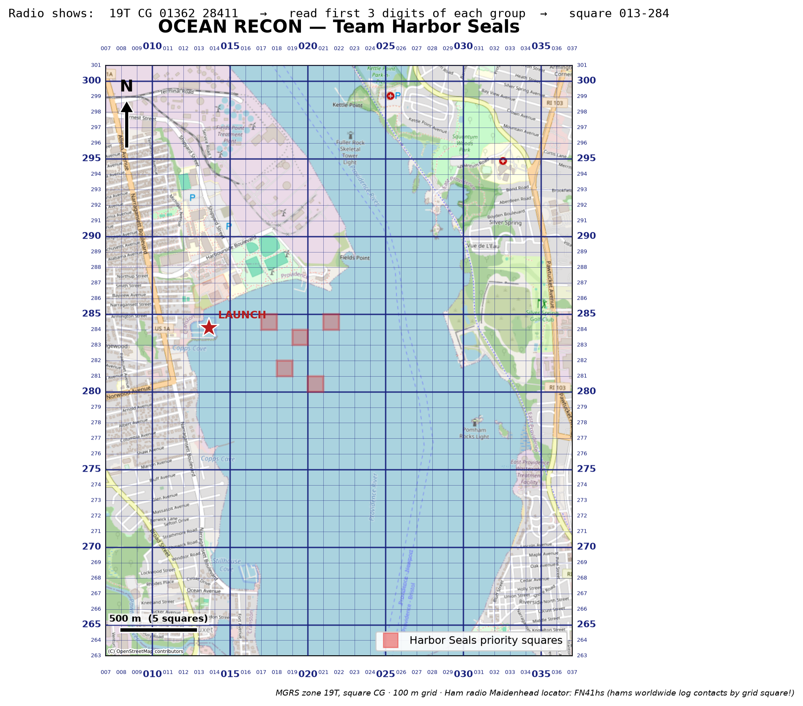

Kids, sailboats, mesh radios, and a grid over the water
Edgewood’s waters need an environmental survey. Each sailboat becomes a recon vessel: aboard is a small mesh radio with a GPS, and a science instrument. The Providence River off the yacht club is divided into 100-meter grid squares, and every team gets a printed chart with five priority squares to cover. Sail into a square, hold position, record the reading — then one button press, and the radio relays your position across the water, boat to boat, back to mission control on shore.
The radio’s GPS page shows position in the US National Grid (the
search-and-rescue standard) — and our firmware build adds a
grid line that has already done the digit work:
The grid line is the map answer: find column 013 and row
284 on the printed chart — that’s your boat. The
mgrs line above it is the full professional reference, and it
hides the same numbers: the whole sailing area sits inside one zone
(19TCG), so split the ten digits that follow in half and take the
first three of each — crews can check the radio’s math themselves.

Team Harbor Seals’ mission chart: OpenStreetMap base, 100 m US National Grid overlay (bold lines every 500 m), three-digit column/row labels on all four edges.
Shaded squares — this team’s priority targets, placed in open water west of the shipping channel.
Star — the launch, at the Edgewood Yacht Club dock (square 013–284).
The top margin of every chart repeats the one skill that unlocks it all: radio shows 19TCG0136228411 → split the ten digits: 01362 | 28411 → first three of each → square 013–284.
The map uses USNG (US National Grid), the civilian twin of the military MGRS — the coordinate system used by search-and-rescue teams, FEMA, and the National Guard. It’s built on UTM, so squares are true squares in meters, and it scales by simply truncating digits: 1000 m, 100 m, or 10 m resolution from the same numbers. When a crew reads “grid 013–284” off their radio, they are using the same grid printed on official SAR maps — a small, real piece of emergency preparedness. Ham radio operators do the same thing globally with the Maidenhead locator system (Edgewood sits in square FN41hs), noted on every chart as a nod to that tradition.
Boats recording ocean and weather data is one of the oldest citizen-science traditions there is. In the age of sail, captains kept careful logs of winds, currents, and temperatures; in the 1840s–50s, Matthew Fontaine Maury gathered thousands of those logbooks into the first wind and current charts — shaving weeks off ocean passages and launching standardized marine weather observation.
That system never stopped. Today, thousands of commercial vessels in the WMO’s Voluntary Observing Ship program still radio in weather reports, while Argo floats and uncrewed sail drones sweep the oceans for the temperature and salinity data behind every weather forecast and climate model. A sailboat crossing a grid square and reporting conditions there is precisely this tradition:
The kids are the newest crew in a data-collecting fleet that’s been underway for almost two centuries.
| Radios | Heltec V4 LoRa boards running open-source MeshCore firmware (dt267 low-power fork) — license-free mesh networking with a built-in display. |
| Position | Standard GPS modules; the fork’s Pos. Format setting puts USNG/MGRS right on the screen, and one press of Quick Send shares a position with shore. |
| Instruments | Handheld to start (thermometers and the crew’s own observations); the boards’ I2C sensor port means onboard environmental sensors can join later. |
| Shore side | A laptop and one more radio: a small Python program logs every message and its position to CSV, lights up covered squares on a live map, and scores each team at debrief. |
| Paper | Printed grid charts (one per team, priority squares shaded) and handwritten data sheets — because reading, plotting, and recording are the skills being taught. |
GPS turns satellite time signals into a position; grids turn positions into names people can say over a radio. Careful measurement means writing down what you saw, where, and when — then checking your record against the instruments. And networks don’t need towers: a message can hop boat-to-boat to shore. Navigation, meteorology, radio, and data literacy — all disguised as an afternoon of sailing.